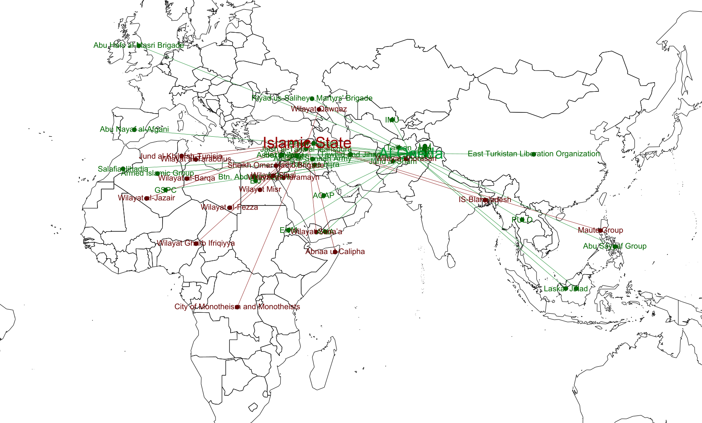
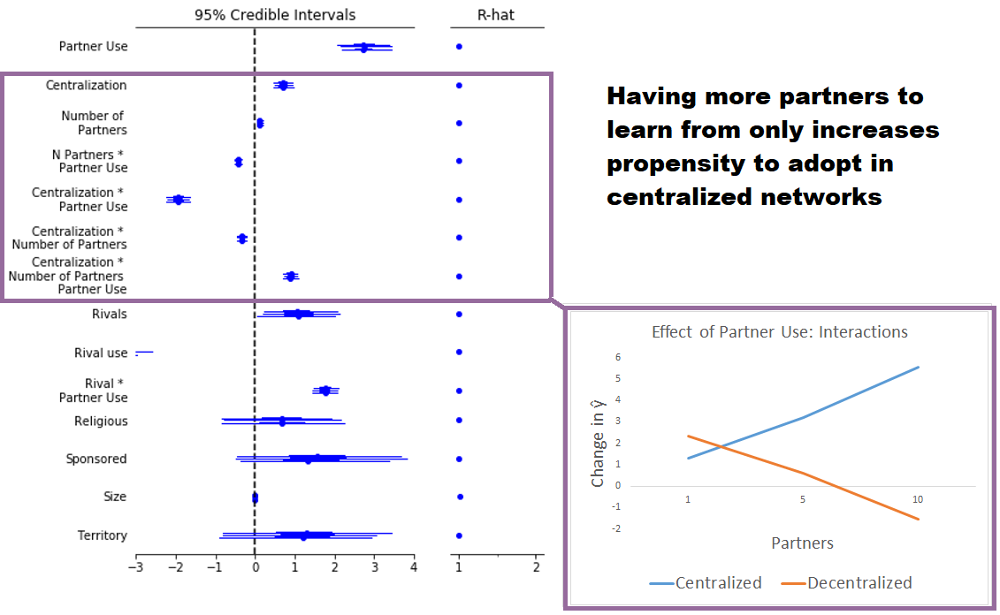

class: center, middle background-color: white .title[Violent Network Structure:] .subtitle[How Cooperative Networks Help and Constrain Violent Groups] .author[Laila A. Wahedi] .date[March 29, 2019] .institution[@lwahedi] .institution[McCourt School of Public Policy, Georgetown University] <img style="width:20%" src="../figures/seal.png"> .center[] .footnote[Created with [{Remark.js}](http://remarkjs.com/) using [{Markdown}](https://daringfireball.net/projects/markdown/) + [{MathJax}](https://www.mathjax.org/) + [{Liminal}](http://www.jmlilly.net/liminal.zip)] --- class: center background-color:#AF002B .footnote[ Laila A. Wahedi -- Follow along at Wahedi.US, under Current Presentation -- law98@georgetown.edu] <h2 style="text-transform: none; color:white; text-align:left; margin-bottom:0px">Terrorist Groups Don't Act Alone: </h2> <img class="plain" src="../figures/line.png" style="float:left; padding:0;margins:0;margin-bottom:0px; align:left; height: 5px; width:75%"> <div style="width:32%; float:left"> <img style="width:75%" src="../figures/structure/train.png"> <h3 style="color:white;">Train</h3> </div> <div style="width:32%; float:left"> <img style="width:75%" src="../figures/structure/trade.png"> <h3 style="color:white;">Trade</h3> </div> <div style="width:32%; float:left"> <img style="width:75%" src="../figures/structure/operate.png"> <h3 style="color:white;">Work <br> Together</h3> </div> </div> --- class: center, .footnote[ Laila A. Wahedi -- Follow along at Wahedi.US, under Current Presentation -- law98@georgetown.edu] <h2 style="text-transform: none; text-align:left; margin-bottom:0px">What's good for AQIM...</h2> <img class="plain" src="../figures/line.png" style="float:left; padding:0;margins:0;margin-bottom:0px; height: 5px; width:75%"> <img src="../figures/structure/AQIM.png" style="width:90%"> --- class: center, .footnote[ Laila A. Wahedi -- Follow along at Wahedi.US, under Current Presentation -- law98@georgetown.edu] <h2 style="text-transform: none; text-align:left; margin-bottom:0px">Is good for al Qaeda...</h2> <img class="plain" src="../figures/line.png" style="float:left; padding:0;margins:0;margin-bottom:0px; height: 5px; width:75%"> <img src="../figures/structure/AQ.png" style="width:90%"> --- class: center, .footnote[ Laila A. Wahedi -- Follow along at Wahedi.US, under Current Presentation -- law98@georgetown.edu] <h2 style="text-transform: none; text-align:left; margin-bottom:0px">And good for al Shabaab</h2> <img class="plain" src="../figures/line.png" style="float:left; padding:0;margins:0;margin-bottom:0px; height: 5px; width:75%"> <img src="../figures/structure/shabaab.png" style="width:90%"> --- class: center, .footnote[ Laila A. Wahedi -- Follow along at Wahedi.US, under Current Presentation -- law98@georgetown.edu] <h2 style="text-transform: none; text-align:left; margin-bottom:0px">But what's bad for one can hurt the rest</h2> <img class="plain" src="../figures/line.png" style="float:left; padding:0;margins:0;margin-bottom:0px; height: 5px; width:75%"> <img src="../figures/structure/ice_cream.png" style="width:90%"> --- class: center background-color:#01BAEF .footnote[ Laila A. Wahedi -- Follow along at Wahedi.US, under Current Presentation -- law98@georgetown.edu] <h2 style="text-transform: none; color:white; margin-bottom:0px; text-align:left; ">These chains compound: </h2> <img class="plain" src="../figures/line.png" style="padding:0;margins:0;margin-bottom:0px; float:left; height: 5px; width:75%"> <img src="../figures/structure/compound.png" style="width:70%"> --- class: center background-color:#FFBA00 .footnote[ Laila A. Wahedi -- Follow along at Wahedi.US, under Current Presentation -- law98@georgetown.edu] <h2 style="text-transform: none; color:white; margin-bottom:0px; text-align:left; ">Puzzle:</h2> <img class="plain" src="../figures/line.png" style="padding:0;margins:0;margin-bottom:0px; float:left; height: 5px; width:75%"> # How do patterns of partnerships constrain and enable violent groups? --- class: center background-color: #9BC53D .footnote[ Laila A. Wahedi -- Follow along at Wahedi.US, under Current Presentation -- law98@georgetown.edu] <h2 style="text-transform: none; color:white; margin-bottom:0px; text-align:left; ">Centralization:</h2> <img class="plain" src="../figures/line.png" style="padding:0;margins:0;margin-bottom:0px; float:left; height: 5px; width:75%"> ## Extent to which one group has more influence than others within the network <img src="../figures/structure/centralized.png" style="width:70%"> --- class: center background-color: #9BC53D .footnote[ Laila A. Wahedi -- Follow along at Wahedi.US, under Current Presentation -- law98@georgetown.edu] <h2 style="text-transform: none; color:white; margin-bottom:0px; text-align:left; ">Centralization:</h2> <img class="plain" src="../figures/line.png" style="padding:0;margins:0;margin-bottom:0px; float:left; height: 5px; width:75%"> ## Extent to which one group has more influence than others within the network <img src="../figures/structure/centralized.png" style="width:70%"> --- class: center background-color: #9BC53D .footnote[ Laila A. Wahedi -- Follow along at Wahedi.US, under Current Presentation -- law98@georgetown.edu] <h2 style="text-transform: none; color:white; margin-bottom:0px; text-align:left; ">High Centralization: Free Syrian Army</h2> <img class="plain" src="../figures/line.png" style="padding:0;margins:0;margin-bottom:0px; float:left; height: 5px; width:75%"> #### Semi-independent sub-groups fit into an ordered hierarchy --- class: center background-color: #9BC53D .footnote[ Laila A. Wahedi -- Follow along at Wahedi.US, under Current Presentation -- law98@georgetown.edu] <h2 style="text-transform: none; color:white; margin-bottom:0px; text-align:left; ">High Centralization: al Qaeda and ISIS</h2> <img class="plain" src="../figures/line.png" style="padding:0;margins:0;margin-bottom:0px; float:left; height: 5px; width:75%"> #### Alliances of independent groups formed around a strong actor  --- class: center background-color: #9BC53D .footnote[ Laila A. Wahedi -- Follow along at Wahedi.US, under Current Presentation -- law98@georgetown.edu] <h2 style="text-transform: none; color:white; margin-bottom:0px; text-align:left; ">Low Centralization: Islamists in Syria</h2> <img class="plain" src="../figures/line.png" style="padding:0;margins:0;margin-bottom:0px; float:left; height: 5px; width:75%"> #### Independent groups with overlapping ties, no one stands out --- class: center background-color: #9BC53D .footnote[ Laila A. Wahedi -- Follow along at Wahedi.US, under Current Presentation -- law98@georgetown.edu] <h2 style="text-transform: none; color:white; margin-bottom:0px; text-align:left; ">Low Centralization: Syrian Rebels</h2> <img class="plain" src="../figures/line.png" style="padding:0;margins:0;margin-bottom:0px; float:left; height: 5px; width:75%"> #### Decentralized networks can still have structure <img src="../figures/syria/Zoom_coop.png" style="width:70%"> --- class: center background-color: .footnote[ Laila A. Wahedi -- Follow along at Wahedi.US, under Current Presentation -- law98@georgetown.edu] <h2 style="text-transform: none; margin-bottom:0px; text-align:left; "><img src="../figures/structure/decent.png">Decentralized:</h2> <img class="plain" src="../figures/line.png" style="padding:0;margins:0;margin-bottom:0px; float:left; height: 5px; width:75%"> </div> <div style="background-color:#01BAEF; height:40%;float:top"> <div style="width:33%; float:left"> <img style="height:75%" src="../figures/structure/redundant.png"> <h3 style="color:white;">Redundant Paths: </h3> </div> <div style="width:33%; float:left"> <img style="height:75%" src="../figures/structure/autonomy.png"> <h3 style="color:white;">Autonomy</h3> </div> <div style="width:33%; float:left"> <img style="height:75%" src="../figures/structure/target.png"> <h3 style="color:white;">Robust to Random Removal</h3> </div> </div> <div style="background-color:#AF002B; height:40%;float:top"> <div style="width:33%; float:left"> <img style="max-width:75%" src="../figures/structure/lost.png"> <h3 style="color:white;">Inefficient</h3> </div> <div style="width:33%; float:left"> <img style="" src="../figures/structure/lazy.png"> <h3 style="color:white;">Free Riding</h3> </div> <div style="width:33%; float:left"> <img style="height:75%" src="../figures/structure/yarn.png"> <h3 style="color:white;">Vulnerable to Unraveling</h3> </div> </div> --- class: center background-color: .footnote[ Laila A. Wahedi -- Follow along at Wahedi.US, under Current Presentation -- law98@georgetown.edu] <h2 style="text-transform: none; margin-bottom:0px; text-align:left; "> <img style="max-height:2.5em" src="../figures/structure/cent.png">Centralized:</h2> <img class="plain" src="../figures/line.png" style="padding:0;margins:0;margin-bottom:0px; float:left; height: 5px; width:75%"> </div> <div style="background-color:#01BAEF; height:40%;float:top"> <div style="width:33%; float:left"> <img style="height:75%" src="../figures/structure/shortcut.png"> <h3 style="color:white;">Information Shortcuts </h3> </div> <div style="width:33%; float:left"> <img style="height:75%" src="../figures/structure/save-time.png"> <h3 style="color:white;">Efficient</h3> </div> <div style="width:33%; float:left"> <img style="height:75%" src="../figures/structure/target.png"> <h3 style="color:white;">Robust to Random Removal</h3> </div> </div> <div style="background-color:#AF002B; height:40%;float:top"> <div style="width:33%; float:left"> <img style="max-width:75%" src="../figures/structure/overwhelm.png"> <h3 style="color:white;">Costly for Center</h3> </div> <div style="width:33%; float:left"> <img style="" src="../figures/structure/freedom.png"> <h3 style="color:white;">Periphery Loses Freedom</h3> </div> <div style="width:33%; float:left"> <img style="height:75%" src="../figures/structure/one_target.png"> <h3 style="color:white;">Vulnerable to Targeted Removal</h3> </div> </div> --- class: center background-color: .footnote[ Laila A. Wahedi -- Follow along at Wahedi.US, under Current Presentation -- law98@georgetown.edu] <h2 style="text-transform: none; margin-bottom:0px; text-align:left; "> <img style="max-height:2.5em" src="../figures/structure/cent.png">Centralized:</h2> <img class="plain" src="../figures/line.png" style="padding:0;margins:0;margin-bottom:0px; float:left; height: 5px; width:75%"> </div> <div style="background-color:#01BAEF; height:40%;float:top"> <div style="width:33%; float:left"> <img style="height:75%" src="../figures/structure/shortcut.png"> <h3 style="color:white;">Information Shortcuts </h3> </div> <div style="width:33%; float:left"> <img style="height:75%" src="../figures/structure/save-time.png"> <h3 style="color:white;">Efficient</h3> </div> <div style="width:33%; float:left"> <img style="height:75%" src="../figures/structure/target.png"> <h3 style="color:white;">Robust to Random Removal</h3> </div> </div> <div style=" height:40%;float:top"> <div style="width:33%; height:100%; float:left; background-color:#01BAEF;"> <img style="max-width:75%" src="../figures/structure/Xoverwhelm.png"> <h3 style="color:white;">Specialization</h3> </div> <div style="width:33%; height:100%; float:left; background-color:#AF002B;"> <img style="max-height:75%" src="../figures/structure/freedom.png"> <h3 style="color:white;">Periphery Loses Freedom</h3> </div> <div style="width:33%; height:100%; float:left; background-color:#AF002B;"> <img style="max-height:75%" src="../figures/structure/one_target.png"> <h3 style="color:white;">Vulnerable to Targeted Removal</h3> </div> </div> --- class: center background-color: .footnote[ Laila A. Wahedi -- Follow along at Wahedi.US, under Current Presentation -- law98@georgetown.edu] <h2 style="text-transform: none; margin-bottom:0px; text-align:left; "> <img style="max-height:2.5em" src="../figures/structure/cent.png">Centralized:</h2> <img class="plain" src="../figures/line.png" style="padding:0;margins:0;margin-bottom:0px; float:left; height: 5px; width:75%"> </div> <div style="background-color:#01BAEF; height:40%;float:top"> <div style="width:33%; float:left"> <img style="height:75%" src="../figures/structure/shortcut.png"> <h3 style="color:white;">Information Shortcuts </h3> </div> <div style="width:33%; float:left"> <img style="height:75%" src="../figures/structure/save-time.png"> <h3 style="color:white;">Efficient</h3> </div> <div style="width:33%; float:left"> <img style="height:75%" src="../figures/structure/target.png"> <h3 style="color:white;">Robust to Random Removal</h3> </div> </div> <div style="height:40%;float:top"> <div style="width:33%; height:100%; float:left; background-color:#01BAEF;"> <img style="max-width:75%" src="../figures/structure/Xoverwhelm.png"> <h3 style="color:white;">Specialization</h3> </div> <div style="width:33%; height:100%; float:left; background-color:#01BAEF;"> <img style="" src="../figures/structure/Xfreedom.png"> <h3 style="color:white;">Periphery Trades For Efficiency</h3> </div> <div style="width:33%; height:100%; float:left; background-color:#AF002B;"> <img style="max-height:75%" src="../figures/structure/one_target.png"> <h3 style="color:white;">Vulnerable to Targeted Removal</h3> </div> </div> --- class: center background-color: .footnote[ Laila A. Wahedi -- Follow along at Wahedi.US, under Current Presentation -- law98@georgetown.edu] <h2 style="text-transform: none; margin-bottom:0px; text-align:left; "> <img style="max-height:2.5em" src="../figures/structure/cent.png">Centralized:</h2> <img class="plain" src="../figures/line.png" style="padding:0;margins:0;margin-bottom:0px; float:left; height: 5px; width:75%"> </div> <div style="background-color:#01BAEF; height:40%;float:top"> <div style="width:33%; float:left"> <img style="height:75%" src="../figures/structure/shortcut.png"> <h3 style="color:white;">Information Shortcuts </h3> </div> <div style="width:33%; float:left"> <img style="height:75%" src="../figures/structure/save-time.png"> <h3 style="color:white;">Efficient</h3> </div> <div style="width:33%; float:left"> <img style="height:75%" src="../figures/structure/target.png"> <h3 style="color:white;">Robust to Random Removal</h3> </div> </div> <div style="background-color:#01BAEF; height:40%;float:top"> <div style="width:33%; height:100%; float:left;"> <img style="max-width:75%" src="../figures/structure/Xoverwhelm.png"> <h3 style="color:white;">Specialization</h3> </div> <div style="width:33%; height:100%; float:left; ;"> <img style="" src="../figures/structure/Xfreedom.png"> <h3 style="color:white;">Periphery Trades For Efficiency</h3> </div> <div style="width:33%; float:left"> <img style="height:75%" src="../figures/structure/Xone_target.png"> <h3 style="color:white;">Evolves Around Strong Core</h3> </div> </div> --- class: center background-color: .footnote[ Laila A. Wahedi -- Follow along at Wahedi.US, under Current Presentation -- law98@georgetown.edu] <h2 style="text-transform: none; margin-bottom:0px; text-align:left; "><img src="../figures/structure/decent.png">Structure and Security:</h2> <img class="plain" src="../figures/line.png" style="padding:0;margins:0;margin-bottom:0px; float:left; height: 5px; width:75%"> </div> <div style="height:40%;float:top"> <div style="width:33%; float:left; height:100%; background-color:#9BC53D"> <h3 style="color:white;">Centralization </h3> </div> <div style="background-color:#01BAEF; width:33%; height:100%; float:left"> <img style="height:75%" src="../figures/structure/leverage_sm_a.png"> <h3 style="color:white;">Leverage</h3> </div> <div style="background-color:#01BAEF; width:33%; height:100%;float:left"> <h3 style="color:white;">Security</h3> </div> </div> <div style="background-color:#AF002B; height:40%;float:top"> <div style="background-color:#AF002B; width:33%; height:100%; float:left"> <h3 style="color:white;">Leverage</h3> </div> <div style="background-color:#AF002B; width:33%; height:80%; padding-top:20px; float:left"> <h3 style="color:white;">Loss of Autonomy</h3> </div> <div style="width:33%; float:left; padding-top:40px"> <h3 style="color:white;">Insecurity</h3> </div> </div> --- class: center, background-color: #FFBA00 .footnote[ Laila A. Wahedi -- Follow along at Wahedi.US, under Current Presentation -- law98@georgetown.edu] <h2 style="text-transform: none; text-align:left; margin-bottom:0px">Empirical Implications</h2> <img class="plain" src="../figures/line.png" style="float:left; padding:0;margins:0;margin-bottom:0px; height: 5px; width:75%"> <h1 style="text-transform: none; text-align: left;color:white;">Groups in centralized local networks should:</h1> <div style="width:32%; float:left"> <h3 style = "color:white; ">Survive</h3> </div> <div style="width:32%; float:left"> <h3 style = "color:white; ">Mobilize Violence</h3> </div> <div style="width:32%; float:left"> <h3 style = "color:white; ">Learning</h3> </div> --- class: center, background-image: url(../figures/seg_arch1.png) .footnote[ Laila A. Wahedi -- Follow along at Wahedi.US, under Current Presentation -- law98@georgetown.edu] <h2 style="text-transform: none; text-align:left; margin-bottom:0px">Empirical Building Blocks: Data</h2> <img class="plain" src="../figures/line.png" style="float:left; padding:0;margins:0;margin-bottom:0px; height: 5px; width:75%"> <p> </p> <h2> Big Allied And Dangerous I</h2> <h4> Cooperative Partnerships</h4> <h4> Rivalries </h4> <h4> Group-level covariates</h4> <h4> Time-static</h4> --- class: center, background-image: url(../figures/seg_arch2.png) .footnote[ Laila A. Wahedi -- Follow along at Wahedi.US, under Current Presentation -- law98@georgetown.edu] <h2 style="text-transform: none; text-align:left; margin-bottom:0px">Empirical Building Blocks: Data</h2> <img class="plain" src="../figures/line.png" style="float:left; padding:0;margins:0;margin-bottom:0px; height: 5px; width:75%"> <p> </p> <h2> Terrorism Knowledge Base</h2> <h4> Attack Event Data</h4> <h4> Tactical Information</h4> <h4> Event-level covariates</h4> --- class: center, background-image: url(../figures/seg_arch3.png) .footnote[ Laila A. Wahedi -- Follow along at Wahedi.US, under Current Presentation -- law98@georgetown.edu] <h2 style="text-transform: none; text-align:left; margin-bottom:0px">Empirical Building Blocks: Data</h2> <img class="plain" src="../figures/line.png" style="float:left; padding:0;margins:0;margin-bottom:0px; height: 5px; width:75%"> <p> </p> <h2> All Together</h2> <h3> Whether a partner has <br> used a tactic in <br>the past three years</h3> --- class: center, background-image: url(../figures/seg_arch6.png) .footnote[ Laila A. Wahedi -- Follow along at Wahedi.US, under Current Presentation -- law98@georgetown.edu] <h2 style="text-transform: none; text-align:left; margin-bottom:0px">Keystone: Hierarchical TNAM</h2> <img class="plain" src="../figures/line.png" style="float:left; padding:0;margins:0;margin-bottom:0px; height: 5px; width:75%"> <p> </p> <img src="../figures/eq-trans.png" style="width:75%"> --- class: center, .footnote[ Laila A. Wahedi -- Follow along at Wahedi.US, under Current Presentation -- law98@georgetown.edu] <h2 style="text-transform: none; text-align:left; margin-bottom:0px">Results: Learning</h2> <img class="plain" src="../figures/line.png" style="float:left; padding:0;margins:0;margin-bottom:0px; height: 5px; width:75%">  --- class: center, .footnote[ Laila A. Wahedi -- Follow along at Wahedi.US, under Current Presentation -- law98@georgetown.edu] <h2 style="text-transform: none; text-align:left; margin-bottom:0px">Results: Lethality</h2> <img class="plain" src="../figures/line.png" style="float:left; padding:0;margins:0;margin-bottom:0px; height: 5px; width:75%"> <img src="../figures/structure/results2.png" style="width:90%"> <h3>Groups in centralized local networks kill more people, and conduct more attacks </h3> * Additive effect, no interaction --- class: center, .footnote[ Laila A. Wahedi -- Follow along at Wahedi.US, under Current Presentation -- law98@georgetown.edu] <h2 style="text-transform: none; text-align:left; margin-bottom:0px">Results: Survival</h2> <img class="plain" src="../figures/line.png" style="float:left; padding:0;margins:0;margin-bottom:0px; height: 5px; width:75%"> --- class: center, .footnote[ Laila A. Wahedi -- Follow along at Wahedi.US, under Current Presentation -- law98@georgetown.edu] <h2 style="text-transform: none; text-align:left; margin-bottom:0px">Backup</h2> <img class="plain" src="../figures/line.png" style="float:left; padding:0;margins:0;margin-bottom:0px; height: 5px; width:75%"> --- --- class: center, background-image: url(../figures/seg_arch4.png) .footnote[ Laila A. Wahedi -- Follow along at Wahedi.US, under Current Presentation -- law98@georgetown.edu] <h2 style="text-transform: none; text-align:left; margin-bottom:0px">Empirical Building Blocks: Unpooled</h2> <img class="plain" src="../figures/line.png" style="float:left; padding:0;margins:0;margin-bottom:0px; height: 5px; width:75%"> <p> </p> <h3>Probability of adopting<br> a given tactic increases <br>when partners use the tactic in:</h3> <h1> 16/17 tactics</h1> <h1> 11/17 tactics significant</h1> <h3>Small n, multiple tests</h3> --- class: center, background-image: url(../figures/seg_arch5.png) <h2 style="text-transform: none; text-align:left; margin-bottom:0px">Empirical Building Blocks: Pooled</h2> <img class="plain" src="../figures/line.png" style="float:left; padding:0;margins:0;margin-bottom:0px; height: 5px; width:75%"> <p> </p> <img src='../figures/surv_trans.png' style="width:50%"> <h3 style = "margin-bottom:0px">.3 increase in P(adoption) when partners use it</h3> <h4 style = "margin-top:0px"> Multiple dependent observations</h4> --- --- class: center, .footnote[ Laila A. Wahedi -- Follow along at Wahedi.US, under Current Presentation -- law98@georgetown.edu] <h2 style="text-transform: none; text-align:left; margin-bottom:0px">Centralization</h2> <img class="plain" src="../figures/line.png" style="float:left; padding:0;margins:0;margin-bottom:0px; height: 5px; width:75%"> <img src="../figures/structure/netcent.png" style="height:70%"> --- class: center, .footnote[ Laila A. Wahedi -- Follow along at Wahedi.US, under Current Presentation -- law98@georgetown.edu] <h2 style="text-transform: none; text-align:left; margin-bottom:0px">Eigenvector Centrality</h2> <img class="plain" src="../figures/line.png" style="float:left; padding:0;margins:0;margin-bottom:0px; height: 5px; width:75%"> <img src="../figures/structure/eig.png" style="height:70%"> --- class: center, .footnote[ Laila A. Wahedi -- Follow along at Wahedi.US, under Current Presentation -- law98@georgetown.edu] <h2 style="text-transform: none; text-align:left; margin-bottom:0px">Lethality</h2> <img class="plain" src="../figures/line.png" style="float:left; padding:0;margins:0;margin-bottom:0px; height: 5px; width:75%"> <img src="../figures/structure/leth.png" style="height:70%"> ---